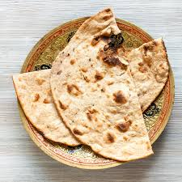

🔥 Tandoori Roti Recipe

Ingredients
- 1 cup whole wheat flour
- 2 tbsp curd (yogurt)
- 1/4 tsp baking powder
- 1/8 tsp baking soda
- 1/4 tsp salt
- Water to knead
- Butter or ghee for brushing
Instructions
- Mix flour, salt, baking powder, baking soda, and curd.
- Knead into a soft dough using water. Let it rest for 30 minutes.
- Divide into balls and roll into medium-thick rotis.
- Cook on a hot tawa or in a tandoor until golden spots appear.
- Brush with butter or ghee before serving.
Serve With
- Paneer Butter Masala
- Dal Makhani
- Chicken Curry
🍽️ Tip: Press one side of the roti with water and stick to the pan for a real tandoor effect on gas flame!